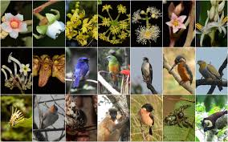

Location:
The Raimona National Park is within the Bodoland Territorial Region.
The area of the park includes the northern part of the notified Ripu Reserve Forest, which forms the western-most buffer to the Manas National Park that straddles the India-Bhutan border.
Borders and Boundary: It is bounded on the west by the Sonkosh river and the Saralbhanga river on the east. Both the rivers are tributaries of Brahmaputra. The Pekua river defines Raimona’ southern boundary.
Conservation Landscape: It shares contiguous forest patches of Phipsoo Wildlife Sanctuary and Jigme Singye Wangchuck National Park of Bhutan creating a transboundary conservation landscape of more than 2,400 sq km.
Attractions: With around 11 forest types and sub-types, Raimona National Park is the most biodiversity-rich forest belt in Assam. Bodoland’s mascot Golden Langur is the prime attraction of Raimona. An endangered species, Golden Langur (Trachypithecus geel) is found in sizeable numbers in pockets of western Assam and Bhutan. Golden Langur shares its space with Asian Elephant, Royal Bengal Tiger, Clouded Leopard, Indian Gaur, Wild Buffalo, Spotted Deer, Hornbill, several species of orchids, more than 150 species of butterflies, 170 species of birds and 380 species of plants. With such rich diversity of flora and fauna, the Raimona National Park is bound to be a major site for tourism, research and conservation
Significance: Largest undivided representative area of Brahmaputra valley flood plain grassland, complex eco-system of grassland, where various stages of biotic succession in grassland eco-system are explicit.
Fauna:The vicinity is assured of about 380 varieties of plants and exotic orchids that charms the whole place. Mostly, this park flourishes with myriads of orchid species, other tropical rainforest species, and riverine grasslands. Other intriguing fauna includes varieties of bamboo and numerous wetland ecosystems.
Mammals:Raimona National Park is famous for golden langur, an endemic species (with Bhutan) which has been named as the mascot of Bodoland region. Royal Bengal Tiger, Asian Elephant, Clouded Leopard, Wild Water Buffalo, and Indian Gaur collectively likely to be the ‘Big 5’ of Raimona National Park. It is already on the global map being an Important Bird & Biodiversity Area.
Birds: It has four to five species of hornbills, more than 150 species of butterflies, 170 species of birds, 380 varieties of plants and orchids.
How to reach:
By Air: Nearest Airport to Raimora National Park is Lokpriya
Gopinath Bordoloi Airport, Guwahati. One can book a cab or hire a taxi
straight to Raimona National Park. The approximate distance is 236.6 km
and takes 5 hours 30 mins.
By Train: Nearest Train Station to Raimora National Park is
Kokrajhar Railway Station. The distance from Kakrojhar to the National
Park is around 53 km which takes about one and a half hours to reach the
vicinity.
By Road: Raimona National Park is accessible from different
directions of the states. One can take from Rangpur (177.6 km), Siliguri
(239 km), or Guwahati (201.1 km) to reach Raimona National Park. If you
enjoy a long road trip, you are welcome to roll down the highway.
Local transportation such as buses, taxis, and liners are available at
your convenience.
Where to stay:
There are several hotels and accommodations available ranging from luxurious to budget packages in Gossaigaon. In fact, this uptown is conveniently located near the National Park where one can enjoy absolute hospitality from the people.
However, accommodation options run out faster since it is a small town. Wherefore, getting a prior booking is encouraged. If not, there are nearby major cities one can find expediently apart from Gossaigaon.
In some consideration, places nearer to Raimora National Park are yet to update, hence the best place to put up is Gossaigaon Town. The quaint town is more than a place to stay. One can feel the local vibe such as the lifestyles, vivid culture, and yummiest meals. A day is enough to explore this beautiful town.
Best season for visit: Spring(March to mid-May) and Autumn(Mid-September to October)
